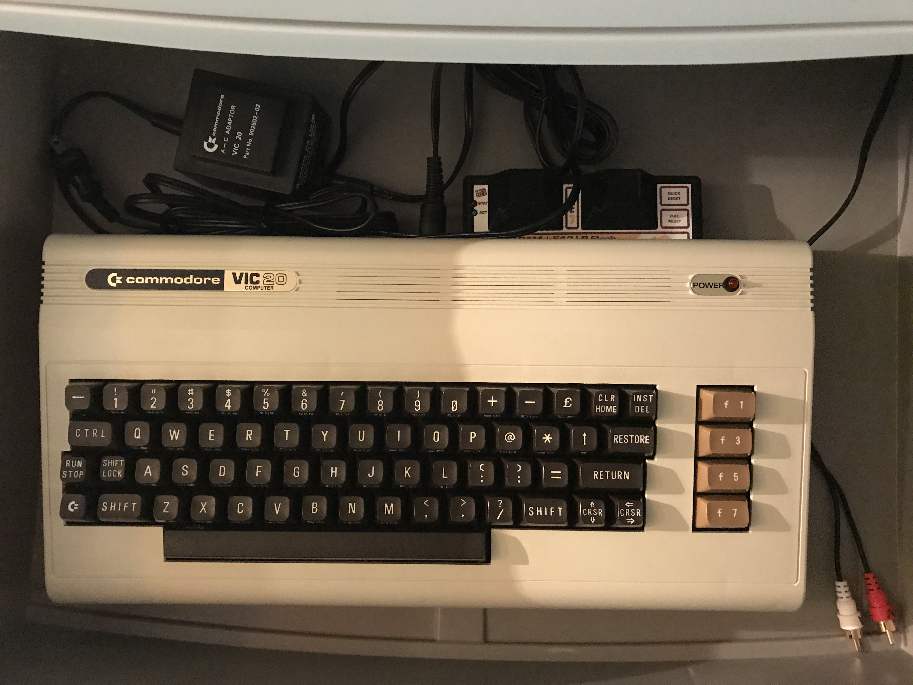
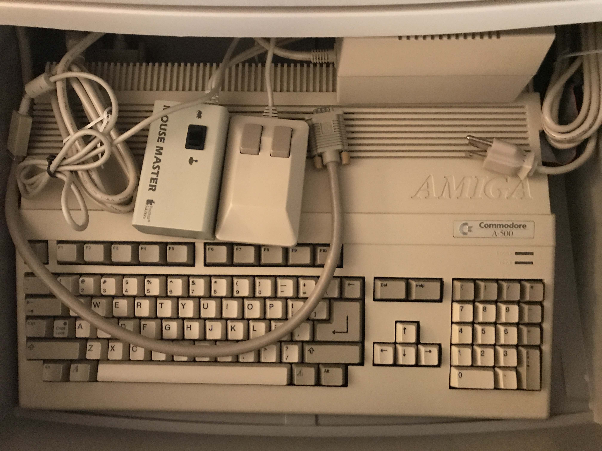
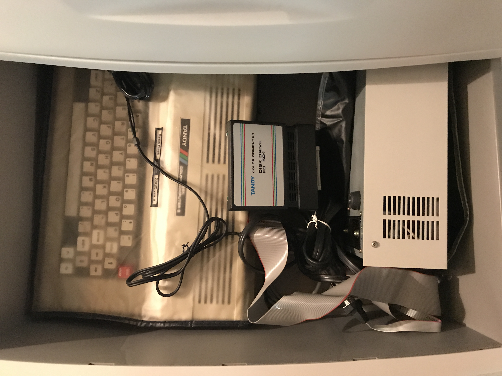

Atari 800

Atari 800XL and 1050 drive

Atari 130XE w/ Indus GT drive
Atari 1040 ST

with drive removed for interfacing with HxC and a Mouse Master
Apple ][+ w/ Paddle Adapple and other cards installed
![Apple ][+](pics/comp_room/drawers/2plus.jpg)
Apple //e enhanced w/ CFFA 3000
Apple //c w/ external drive and cable to switch between internal drive and Floppy Emu

Apple IIGS w/ CFFA 3000

Commodore Vic-20 w/ the Final Expansion 3 cart

Commodore 64 with a bunch of stuff - 1541 drive, 1541 Ultimate II+ w/ tape adaptor, joystick switcher, 3rd party power supply, and a Sav64
Commodore 64C and 1541-II

Commodore Amiga 500 w/ drive removed for interfacing with HxC and a Mouse Master

Tandy Color Computer 3 and Tandy 5 1/4" disk drive

Coleco Adam (with custom power supply so no need for printer yay!)
Texas Instruments 99/4A w/ original joysticks and the FinalGrom99 cart in use

Apple //c and ][ drives and a Atari 1010 tape unit
and more drives
Misc joysticks
USB interfaces for joysticks, the 'daptor interfaces are highly recommended
I have a ton of SD, CF, and floppy emulation type mass storage devices for the old systems
I also have an SCP for imaging 5 1/4" and 3 1/2" floppies at the very lowest level for preservation. The drives are mounted in an old Sun Microsystems enclosure.